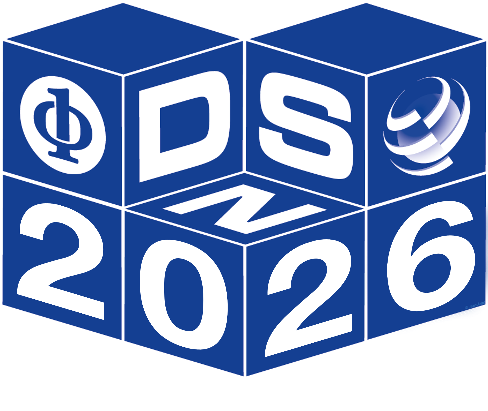

DSN 2025
The 55th Annual IEEE/IFIP International Conference on Dependable Systems and Networks
Naples, Italy, June 23-26, 2025
Important Dates
| Research Track |
|
| Nov. 27, 2024 |
Abstract Submission Deadline |
| Dec. 4, 2024 |
Paper Submission Deadline |
| Jan. 27, 2025 |
Early Reject Notification |
| Feb. 13 - 27, 2025 |
Author Rebuttal Period |
| Mar. 19, 2025 |
Notification to Authors |
| Apr. 28, 2025 |
Camera Ready Materials |
| Industry Track (tentative) |
|
| Mar 17, 2025 |
Abstract Submission Deadline |
| Mar 24, 2025 |
Paper Submission Deadline |
| Apr 21, 2025 |
Notification |
| April 28, 2025 |
Camera-ready Materials |
| Poster Track |
|
| Jan 31, 2025 |
First Submission Deadline |
| Feb 28, 2025 |
Notification |
| Mar 31, 2025 |
Second Submission Deadline |
| Apr 19, 2025 |
Notification |
| Apr 30, 2025 |
Camera Ready Materials |
| Doctoral Forum |
|
| Mar 17, 2025 |
Submission Deadline |
| Apr 21, 2025 |
Notification |
| Apr 28, 2025 |
Camera-ready Materials |
| Artifacts |
|
| Mar 19, 2025 |
Notification to Authors (paper) |
| Mar 24, 2025 |
Artifact Submission Deadline |
| Apr 27, 2025 |
Artifact Notification to Authors |
| Apr 28, 2025 |
Camera-ready Deadline (paper) |
| Tutorials |
|
| Mar 08, 2025 |
Tutorial Proposals Submission |
| Mar 22, 2025 |
Notification |
| Apr 28, 2025 |
Camera-ready Materials |
| Disrupt (tentative) |
|
| Jan 27, 2025 |
Abstract Submission Deadline |
| Feb 03, 2025 |
Paper Submission Deadline |
| Mar 17 - 20, 2025 |
Author Rebuttal Period |
| Apr 04, 2025 |
Notification to Authors |
| Apr 28, 2025 |
Camera-ready Materials |